This chapter was written by Diane Devine with contributions from Lee Mizusawa and Ross Gittell.
There is significant and increasing interest and demand by both consumersA person or group who purchases products or services for use or consumption and can also be called a customer. and companies in being more sustainable. The sustainability market includes an increasingly wide range of companies, products, and services, all in some way intending to address sustainability concerns.
Why do companies adopt sustainability principles? Sustainable practices are good business practices. Not only does it help the greater good by improving a company’s ecological footprintMeasures how much land and water area a human population requires to produce the resources it consumes and to absorb its carbon dioxide emissions., but it can reduce waste, increase consumer engagement and loyalty, and provide a competitive edge, all contributing to the bottom line. Unlike more traditional companies that focus almost solely on the bottom line alone, sustainable companies focus on the triple bottom line, which includes (1) people, (2) planet, and (3) profits.
Sustainable marketingInvolves developing and promoting products and services that meet consumer and business user needs utilizing society’s natural, human, and cultural resources responsibly to ensure a better quality of life now and for future generations to come. involves developing and promoting products and services that meet consumer and business user needs utilizing society’s natural, human, and cultural resources responsibly to ensure a better quality of life now and for future generations to come. The focus of this chapter is to help students better understand what is meant by sustainable marketing and how it differs from traditional marketing.
Sustainable marketing is not just about taking steps to appear more environmentally friendly or more socially conscious and advertising that fact to consumers. It is more substantive and meaningful. Sustainable marketing draws on traditional marketing methods and in addition requires the following:
An increasing number of consumers base their purchases in some way on the environmental and social impact of the product and services they buy and the companies from which they purchase. In an October 2011 study, Cone Communications and Echo Research identified that 81 percent of respondents said that companies had a responsibility to “address key social and environmental issues” and 76 percent of respondents said they had bought a product with “an environmental benefit” in the last twelve months.“2011 Cone/Echo Global CR Report,” Cone Communications, http://www.coneinc.com/2011globalcrreport.
The size of the sustainable market (defined by Mintel, a research company, as “healthy products/healthy planet”) is significant and is expected to grow to $922 billion by 2014.“Consumers Claim They Are Willing to Pay Extra for Green,” eMarketer Green, last modified April 1, 2010, accessed April 1, 2010, http://www.emarketergreen.com/blog/index.php/consumers-pay-extra-green; “Definitions of Healthy Products, Healthy Planet (‘HP2’) Sectors,” Nutrition Business Journal, last modified May 15, 2008, http://newhope360.com/business-directory/definitions-healthy-products-healthy-planet-hp2-sectors. This represents an increasing but still relatively small portion of the US and world economy, with the size of the US economy being approximately $15 trillion and world economy being about $60 trillion in 2010. New sustainable product launches are continuing to grow with consumer demand. In the food and beverage category alone, Mintel Global New Products Database (GNPD) has tracked more than thirteen thousand new sustainable food and drink products since 2005.Mintel, “Sustainable Food and Drink Category,” press release, October 2010, http://www.mintel.com/press-centre/press-releases/614/sustainable-food-and-drink-lovers-attracted-by-perceived-superior-quality.
Figure 6.1
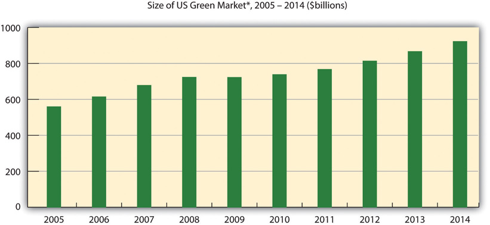Source: Mintel, Global New Product Database (GNDP), March 2010, http://www.eMarketerGreen.com.
Figure 6.2
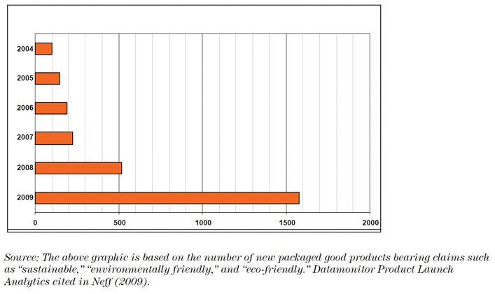Source: Datamonitor Product Launch Analytics cited in http://www.horizons.gc.ca/doclib/2011-0058_eng.pdf.
Source: Nielsen, Global Online Survey, 2011, http://www.nielsen.com/content/dam/corporate/us/en/reports-downloads/2011-Reports/nieslen-sustainability-report.pdf.
Survey of Global Consumers on Environmental Issues of Concern
According to Nielsen’s 2011 Global Online Environment and Sustainability Survey (http://www.nielsen.com/us/en/insights/press-room/2011/global-warming-cools-off-as-top-concern.html) of more than 25,000 Internet respondents in fifty-one countries, three out of four global consumers rated air pollution (77 percent) and water pollution (75 percent) as top concerns, both increasing 6 percentage points compared to 2009. The areas where concern is mounting fastest is over the use of pesticides, packaging waste, and water shortages, with reported concern increasing 16, 14, and 13 percentage points, respectively. Top environmental concerns among Asia Pacific consumers include water shortages and air pollution. Water pollution was the main concern for Latin Americans, Middle Easterners, Africans, Europeans, and North Americans.
The following are key drivers of sustainable marketing:
Figure 6.3
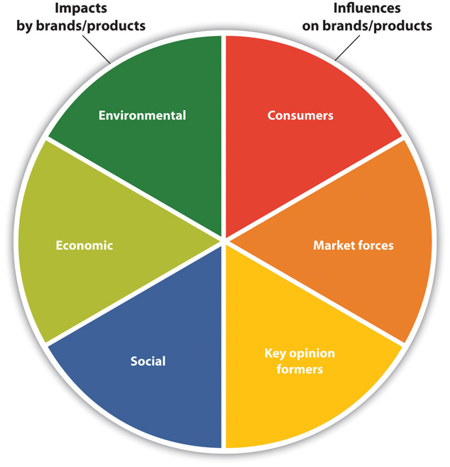One Company’s Approach to Sustainability: P&G
More and more companies are realizing the importance of incorporating sustainability principles into their business model. Keys to success are (1) complete integration and adoption of sustainability into the company’s vision and business strategy; (2) clear transparency and honest communication to the consumers, stakeholders, and community at large; and (3) measureable progress against well-defined sustainability goals.
In 2010 one of the largest consumer packaged goods company in the world, Procter & Gamble (P&G), announced a new long-term sustainability vision. P&G’s “Purpose-inspired Growth Strategy” is about “improving the lives of more consumers, in more parts of the world, more completely.”
As P&G describes it,“Environmental Sustainability,” Procter & Gamble, http://www.pg.com/en_US/sustainability/environmental_sustainability/index.shtml.
We developed this vision over the course of a year, partnering with external experts and soliciting input from hundreds of P&G employees at all levels and functions.
Our complete visionary end-points are outlined below. These end-points are long-term in nature because some of them will take decades to come to fruition.
P&G has made a serious commitment to sustainability.
Kermit the frog may have had it right—“It’s not easy being green.” There is a lot to consider when creating a sustainable marketing strategy. It is not simply adding “green” to your brand platform or announcing that you support a worthy cause. To be most successful, a commitment to sustainability should be part of the company’s overall vision and an integral part of the company’s values and fundamental beliefs. For example, Seventh Generation, a Vermont-based company that makes personal and household cleaning products, adheres to a model of deeper business purpose (see Chapter 8 "Case: Marketing Sustainability: Seventh Generation Creating a Green Household Consumer Product"). The company’s founder, Jeffrey Hollender, had a vision to create and nurture a company with sustainability at the core. Everything that the company does focuses on the triple bottom line of people, planet, and profit for the greater good. From their products—which are made using only natural, recycled, or renewable materials—to their philanthropic efforts that seek to help create a sustainable community, Seventh Generation employs a well-integrated sustainability vision and strategy.
A strong sustainability strategy includes understanding how the company impacts the people and environment in which it operates and consciously applies sustainable practices throughout every element of its business. Companies such as Timberland (see Chapter 11 "Case: Accounting for Sustainability: How Does Timberland Do It and Why?") and Procter & Gamble have adopted sustainability practices and have set specific and measureable goals—both short and longer term—to reduce their company’s carbon footprint. This includes actively examining the carbon lifecycle of their products—from the raw materials used in manufacturing all the way through to the recycling phase to ensure that they are meeting these goals.
Inherent in this practice is the concept of radical transparency, whereby everything the company does is transparent and visible to the consumer and community at large, which contributes to the credibility of the sustainable brand. Measureable goals contribute to radical transparency as they provide clear and actionable goals to which the company can commit and progress against. For example, Unilever’s sustainable strategy commits to aggressively reducing their environmental impact and enhancing livelihoods by the year 2020. Unilever has made sustainability the cornerstone of their mission with clear, transparent goals against which they will be measured.“Unilever Sustainable Living Plan,” Unilever, http://www.unilever.com/images/UnileverSustainableLivingPlan_tcm13-239379.pdf.
To view Unilever's Sustainable Living Plan, visit http://www.unilever.com/images/UnileverSustainableLivingPlan_tcm13-239379.pdf and go to page seven.
Radical Transparency
Radical transparency involves everything a company does being completely transparent and visible to the consumer and all stakeholders.
A marketing planA written plan, which is well integrated with the company’s vision, containing objectives, strategies, and tactics to be used to meet a company’s marketing goals. The marketing plan is typically done yearly. is derived from the company’s vision and integrates an organization’s overall goals and marketing objectives (what goals they want to achieve) and strategies (how they are going to achieve them) into a cohesive plan, typically on an annual basis. The green marketingMarketing activities aimed at taking advantage of the changing consumer attitudes toward more sustainable principles. Green marketing companies seek to go above and beyond traditional marketing by promoting environmental core values in the hope that consumers will associate these values with their company or brand. plan focuses on the ideal marketing mix to achieve maximum profit potential while adhering to sustainability principles.
The key elements of the marketing plan are as follows:
There are several keys to creating an effective green marketing strategy:
Product Life Cycle
There are basically five stages of the product life cycle, including the development, introduction, growth, maturity, and decline stages. Customers will only be able to purchase products in the latter four stages because the product typically has not yet been placed on the market in the development stage. Some companies, however, like computer software companies, do release a limited number of products during the development phase to help with their beta testing.
The marketing mix, also known as the four Ps of marketing, is the combination of productA tangible good or intangible service that is marketed to a consumer., price, place (distribution), and promotionThe marketing communication tools and tactics that a company uses to promote and market their product, such as advertising, public relations, social media, personal selling, and event marketing, among others.. Marketers develop strategies around these four areas in marketing to enhance branding, sales, and profitability. The marketing mix forms the foundation for creating a sustainable marketing strategy. Sustainability marketing, unlike traditional marketing, needs to adhere well to sustainability principles throughout the marketing mix. This helps to (1) strengthen the brand identity; (2) provide credibility; and (3) ensure honest, truthful communications and radical transparency with stakeholders, one of the cornerstones of good sustainability marketing principles.
A product is a tangible good or an intangible service that is marketed to a consumer. A tangible good is something that can be seen, heard, tasted, felt, or seen. Products such as coffee, milk, biofuel, laundry detergent, and outdoor apparel are all examples of tangible goods.
Intangible products are mostly service based and provided by someone directly in contact with customers, such as mutual fund investment services, health care services, and consulting services. Sometimes the intangible service results in a tangible product, such as a lawyer providing legal advice in filing for a product patent. The intangible product is the lawyer’s services, and the tangible product is the patent itself.
When looking at a sustainable-marketed product, consideration should be made for sourcing of materials, ingredients used, and the manufacturing of the product. This includes using all natural and organic materials, sourcing local and through fair trade suppliers, utilizing environmentally friendly materials, and using lean manufacturing and distribution methods that minimize the company’s carbon footprint. For example, Unilever (the corporate owner of Ben & Jerry’s) has committed that all ingredients in Ben & Jerry’s ice cream be sourced through fair trade suppliers and certified as such by 2013.
Fair Trade
Fair trade is a global trade system that ensures producers get a fair price for their goods. It is the cornerstone of a sustainable economy. Starbucks began purchasing Fair Trade Certified coffee in 2000, helping to grow the market for Fair Trade Certified™ coffee in the United States. Fair Trade Certified™ coffee empowers small-scale farmers organized in cooperatives to invest in their farms and communities, protect the environment, and develop the business skills necessary to compete in the global marketplace.“Responsibly Grown and Fair Trade Coffee,” Starbucks, http://www.starbucks.com/responsibility/sourcing/coffee.
Companies, both large and small, are undertaking sustainability initiatives. The most successful companies in doing this sincerely embrace sustainability principles at its core; set clear and measurable goals; and clearly, transparently, and truthfully communicate with their stakeholders about the ecological and social impacts of their products and services. These companies use the four PsCombination of product, price, place (distribution), and promotion that encompass the marketing mix. to enhance and fulfill their sustainable positioning to be true to the vision throughout their marketing mix.
Seventh Generation is a pioneer in sustainability marketing and a leader in natural household cleaning products. Deriving its name from the Great Law of the Iroquois that states, “In our every deliberation, we must consider the impact of our decisions on the next seven generations,” Seventh Generation has long been practicing sustainability throughout its marketing mix for over twenty years. Their entire product line of household and personal care products—from laundry detergents to baby wipes—are carefully designed and manufactured to minimize their impact on the environment. Using all natural, renewable, and recyclable resources, Seventh Generation is working to “help protect human health and the environment.”“Green Cleaning Products,” Seventh Generation, http://www.seventhgeneration.com. (See Chapter 8 "Case: Marketing Sustainability: Seventh Generation Creating a Green Household Consumer Product" for more information on their approach to sustainable marketing.)
Timberland’s Earthkeepers product line is the company’s most visible effort to put their environmental values into their products and market it. Products produced under the Earthkeepers label feature (1) reduced use of harmful chemicals, including no PVC and water-based adhesives; (2) use of recycled materials, including plastic bottles made into linings and laces and recycled rubber sole boots made with up to 30 percent recycled rubber; (3) use of organic materials, including organic cotton; and (4) use of recycled packaging materials, with all boxes made of 100 percent postconsumer recycled packaging cardboard. Timberland has implemented eco-labels to communicate information to consumers about the impacts of their products and has implemented life cycle management to quantify the environmental impacts of the products that it produces. (See Chapter 11 "Case: Accounting for Sustainability: How Does Timberland Do It and Why?" for more information.)
Another example is General Electric. The company committed to utilizing clean technologies and reducing their environmental footprint in 2005 with their ecoimagination program. Since then, a hybrid engine train has been put into development, a state-of-the-art wind turbine blade has been manufactured, and a superefficient washing machine and coal-gasification technology have been introduced. General Electric, in particular, is noteworthy for its pledge to double its investments in the research and development of environmentally friendlier technologies. The total budget for research and development went from $700 million in 2004 to $1.5 billion in 2010. General Electric has been consistently named in the top ten of Global 100 Most Sustainable Corporations.“GE and Unilever Step Forth to Write a New Agenda,” New Economy, http://www.theneweconomy.com/business-and-management/sustainability/ge-and-unilever-step-forth-to-write-agenda.
In the garment industry, Earthtec is an emerging sustainability product marketing clothing manufacturer. Using postconsumer recycled polyethylene terephthalate plastics (such as discarded water bottles), Earthtec converts landfill-bound bottles into high-performance fabrics and clothing. The company is dedicated to using recycled or renewable materials in every single article of clothing they make. Beyond their product line focused on sustainability, the company has incorporated a streamlined manufacturing model that is designed to minimize their carbon footprint.“Earthtec—Clothing with a Conscience,” Earthtec, http://www.earthtec.com/our_story/conscience.
An example of sustainable intangibles is the services provided by the mutual fund company Pax World. Pax World is a recognized leader in the field of sustainable investing—the full integration of environmental, social, and governance (ESG) factors into investment analysis and decision making—in its mutual fund offerings.“About Pax World,” Pax World, http://www.paxworld.com/about. Pax World provides the intangible service of investment advice with a strong sustainability conscience. (See Chapter 12 "Case: Sustainable Investing: Pax World Helping Investors Change the World" for a more comprehensive discussion of sustainable investing.)
A consumer target marketA defined set of consumers, who are particularly interested in a product or market, would have access to it, and are able to purchase it. Often referred to as a target audience. (often referred to as a target audience) is a defined set of consumers who are particularly interested in a product or market, would have access to it, and are able to purchase it. Market segmentationTargeting audiences into homogenous groups according to demographics, psychographics, or behavioral or geographical characteristics. divides these audiences into homogenous groups of customers, each of them reacting differently to promotion, communication, pricing, and other variables of the marketing mix. Market segments should be formed in a way that differences between consumers within each segment are as small as possible. This is especially helpful to optimize marketing budgets, targeting dollars to those most interested in your product to allow a more effective and efficient marketing plan.
Segmentation can be further defined using demographic, geographic, psychographic, and behavioral segmentation. Demographic segmentation divides the market into groups based on variables, such as age, marital status, household income levels, education, children in household, and occupation. Geographic segmentation divides a market by location and includes such variables as population density (urban, suburban, and rural areas) and climate. Psychographic segmentation classifies consumers based on individual lifestyles, attitudes, and beliefs. Behavioral segmentation divides consumers by such variables as attitude toward the product, user status, or user rate.
Within the green market segment, it is important to understand which consumers to target. Once strictly limited to “tree huggers,” the market is growing. According to a 2011 study by OgilvyEarth titled “Mainstream Green,” consumers can be subdivided and segmented behaviorally and psychographically by their level of “green intensity.” Hardcore green consumers who only purchase sustainable products are called “super greens” and represent about 16 percent of the market. On the other extreme are “green rejecters,” those not looking for or interested in green products, which represent 18 percent of the market. Most of America (66 percent) is in the green middle ground—not hardcore green but not completely unaware or unappreciative of issues surrounding sustainability.Graceann Bennett and Freya Williams, Mainstream Green, 2011, http://assets.ogilvy.com/truffles_email/ogilvyearth/Mainstream_Green.pdf.
Figure 6.4
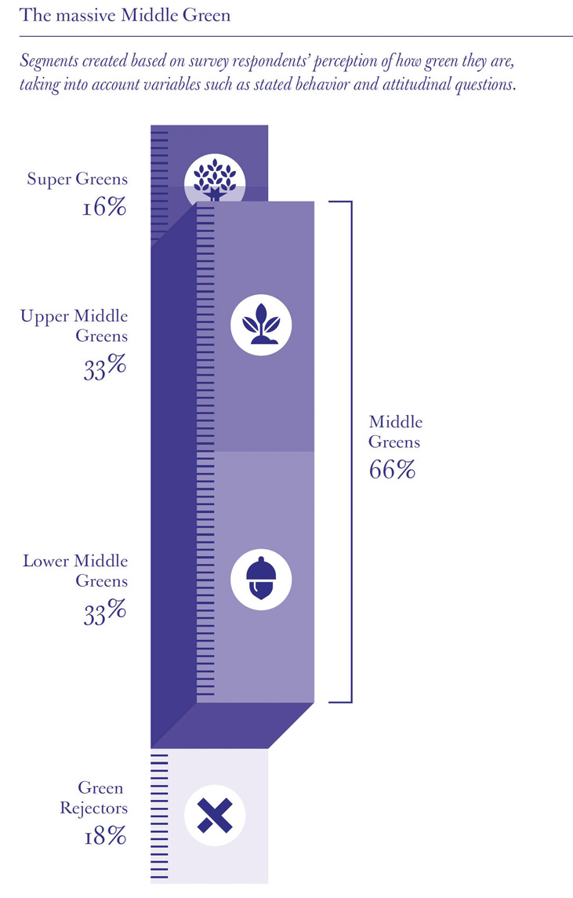Source: Graceann Bennett and Freya Williams, Mainstream Green (OgilvyEarth, 2011), http://bit.ly/gdpVjL.
Companies who market to green consumers look at those on the spectrum as well as determine which consumers will provide the greatest volume potential. But with so many consumers firmly entrenched in the middle green, there exists opportunities to create products with mass appeal.
For consumer packaged goodsA type of good that is consumed every day by the average consumer. The goods that compose this category are ones that are typically replaced frequently, compared to those that are usable for extended periods of time. purchases, women are typically the primary target audience as they still do the bulk of today’s household shopping. Seventh Generation, a sustainable personal care and household cleaning products manufacturer, targets the middle green as well as new moms, whom they find to be especially interested in making the world a better place for their newborns.Romy Ribitzky, “Seventh Generation Embarks on First Ever National Ad Campaign,” Portfolio.com, February 11, 2010, http://www.portfolio.com/industry-news/advertising-marketing/2010/02/11/seventh-generation-embarks-on-first-ever-national-ad-campaign.
Figure 6.5
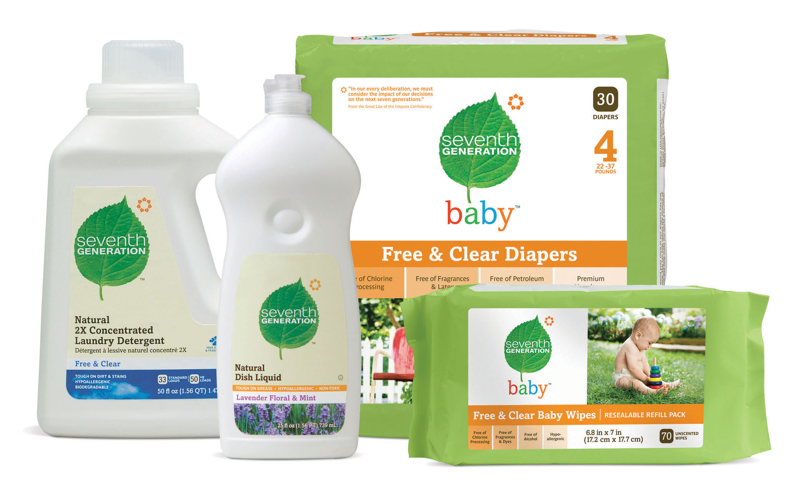Source: Seventh Generation.
Consumer Packaged Goods
Consumer packaged goods are a type of good that is consumed every day by the average consumer. The goods that compose this category are ones that need to be replaced frequently, compared to those that are usable for extended periods of time. Examples are laundry detergent, food, shampoo, soap, and beverages.
Other companies target the super green. Super green consumers may undertake costly actions in order to signal themselves as such; this has been called conspicuous conservation.Much of this paragraph is drawn from Steven Sexton and Alison Sexton, “Conspicuous Conservation: The Prius Effect and Willingness to Pay for Environmental Bona Fides” (unpublished manuscript, April 2011). Car ownership decisions are one of the most visible consumption decisions households make. Since the introduction of the Toyota Prius in the United States in 2001, a growing number of vehicle models have been introduced with features that reduce environmental impacts. The Prius was the only model that provided a unique exterior shape and a design that stood out and announced that it was different than standard vehicles. The Prius has emerged as the clear leader among twenty-four different hybrid models available in the United States, with 48 percent of the 290,271 hybrid cars sold in the United States in 2009. Prius’s success is particularly pronounced in communities with high percentages of super greens, such as Berkeley (California), Boulder (Colorado), and Portland (Oregon), who want to make public their environmental practices and beliefs. The Prius with its unique product design has successfully provided the vehicle for owner’s to signal their affinity for the environment allowing super greens to make a conspicuous statement about their conservation efforts.
Packaging plays a critical role in the product’s sustainability. Consumers have increasingly been made aware of environmental packaging choices and are changing their behavior as a result. A leading example of this is with water bottles. Many consumers have made the switch from purchasing single-use plastic water bottles to using refillable water containers. In 2008, 2.5 million tons of plastic bottles and jars were thrown away.“Use-and-Toss Bottle Facts,” Reuseit.com, http://www.reuseit.com/learn-more/top-facts/plastic-bottle-facts. The extremely slow decomposition rate of plastic bottles leaves them to sit in landfills or litter oceans for years. As a result of increased consumer awareness and consumer demand, sales of reusable water bottles from environmentally friendly producers such as Sigg and Kleen Kanteen have come onto the market. Consumers still want clean, filtered water, and companies, such as Brita and PŪR, makers of water filters, have seen a 22.2 percent and 15.2 percent increase in sales during 2009, respectively.GreenerDesign staff, “Green Product Trends: More Launches, More Sales,” GreenBiz.com, April 23, 2009, http://www.greenbiz.com/news/2009/04/23/green-product-trends-more-launches-more-sales.
Another strong consumer packaging trend is the use of reusable shopping bags at grocery stores. Americans use one hundred billion plastic shopping bags every year and over five hundred billion are consumed globally. Of this, four billion become general litter.“Reusable Shopping Bags…What’s the Buzz?,” Notawaste.com, http://www.notawaste.com/articles/reusable_shopping_bags.html. Consumers and retailers are recognizing this, encouraging new behavior, and now it is almost fashionable to bring your reusable shopping bags to your local store. As of 2011, more than two-thirds of consumers indicated that they now use reusable shopping bags.
Figure 6.6
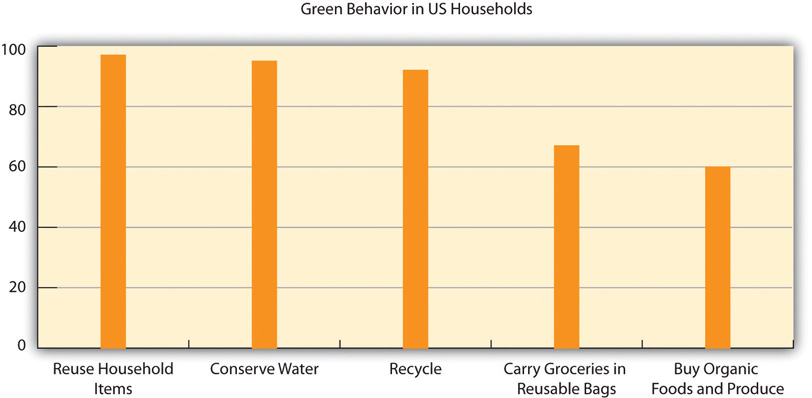Source: Survey by Marcal Small Steps and Kiwi Magazine, September 20, 2010, http://www.eMarketerGreen.com.
Another one of the keys to sustainable packaging is to ensure that the product-to-packaging ratio is “right-sized”—meaning that the product tightly fits in the packaging and there is no wasted use of packaging materials or “air space.” This is not only for the package itself but also for the packing case, which houses multiples of the products for shipping. This is often referred to as “cube optimization.” Cube optimization means right-sizing packages and fitting orders into packaging dimensions that are as small as possible without threatening the integrity of the order. Tight packaging-to-product ratios accomplish two things: (1) they reduce use of packaging materials and (2) they reduce energy costs as the pallet loads are more condensed and the manufacturer is not paying to transport “air.” Additionally, as more and more products are being shipped globally in containers by ocean, air, trucks, and rail, every inch of transport space and fuel usage is significant. This is an example of a win-win situation for the business and the environment, as shipping more in the same volume of space cuts shipping costs, impacting the business bottom line, while reducing the amount of energy (and associated greenhouse gas [GHG] emissions) needed, positively impacting the environmental “bottom line.”
Using renewably sourced materials is another way companies can create more sustainable packaging. Renewable materials are those that utilize forest, fiber, and agriculture products. Nonrenewable materials are those like plastic or Styrofoam, which are derived from petroleum and other fossil fuels.
Walmart’s Packaging Sustainability Initiative
Walmart has pledged to eliminate twenty million metric tons of GHG emissions from their global supply chain by the end of 2015. That is 150 percent of the company’s estimated global carbon footprint growth over the next five years.Walmart, “Remarks as Prepared for Mike Duke, President and CEO of Walmart Greenhouse Gas Goal Announcement,” news release, February 25, 2010, http://walmartstores.com/pressroom/news/9669.aspx. As part of this initiative, Walmart is planning to reduce its packaging globally by 5 percent versus their 2008 baseline. Through a sustainable packaging scorecard that Walmart has developed and put in place to help monitor their suppliers’ efforts, Walmart can track and use their immense weight to push suppliers to help them achieve their goals. The following are some of their notable successes with their suppliers to date:Kevin Hagen, “The Effects of Walmart’s Packaging Scorecard on Environmental Sustainability,” Yahoo!, January 22, 2010, http://www.associatedcontent.com/article/2614159/the_effects_of_walmarts_packaging_scorecard_pg2.html?cat=3.
Source: Walmart.
Price is the monetary (or bartered) amount a consumer pays for a product or service based on the product or service’s value or worth. For sustainable products, pricing has often been an issue limiting a product’s or service’s mass acceptance and market growth. Green products tend to be more expensive because the ingredients may cost more than their conventional counterparts. For example, organic food grown with natural fertilizers may be more expensive than those foods not utilizing natural fertilizers. Manufacturing and transportation costs can also be higher. For example, if the transport costs use a higher cost but lower polluting renewable energy fuel source, this will contribute to a higher price point. This creates a price gap between conventional products and those that are sustainable, which is often referred to as the “green pricing gap.” The higher price can be a barrier to wide market acceptance for many green products, as some consumers may want to purchase products that are better for the environment but either do not want or are financially unable to pay a higher price. For the large majority of consumers, if they do not receive additional value from a sustainable product, for example, in the form of reduced energy costs or longer product lives, they will not pay a premium for the sustainable product. If a product is competitive in terms of price, as well as product, place, and promotion, with traditional products and services, sustainability can give that product a competitive edge particularly among consumers with some interest in sustainability such as the middle green.
Marketers need to minimize the price barrier either by reducing the price point to be closer to its conventional counterparts or through marketing efforts to raise the perceived value to command a premium. Products, such as organic food brands, Earth’s Best, and Starbucks with their fair trade coffee, have done a commendable job in creating greater perceived value, thus commanding premium pricing. Some green product marketers use effective targeting to minimize the green price gap by targeting either people who are better off financially (those who can better afford to take environmental factors into their consumption decisions) or particular market or consumer groups, such as super greens and green regional markets (e.g., Portland, Oregon), with concentrations of potential customers who derive value in conspicuous conservation and demonstrating their environmentalism.Lindsay Kauffman, “Green as a Status Symbol: Why Increased Prices May Increase Sales,” Triplepundit.com, http://www.triplepundit.com/2011/05/green-status-increase-prices-increase-sales.
When Price and Quality Are the Same, Preferring to Support a Worthy Cause
A 2011 Cone/Echo Global Study revealed that when price and quality are about the same, consumers will pick the brand that is supporting a worthy cause like sustainability.“2011 Cone/Echo Global CR Report,” Cone Communications, http://www.coneinc.com/2011globalcrreport.
To view data about switching brands, visit http://www.echoresearch.com/data/File/pdf/Cone_pdfs/2011%20Cone_Echo%20Global%20CR%20Opportunity%20Study.pdf.
To that end, consider the American family of four who spends an average $115.60 per week on groceries.Food Marketing Institute, U.S. Grocery Shopper Trends (Food Marketing Institute, 2010), 107; “Key Facts,” Food Marketing Institute, accessed April 1, 2010, http://www.fmi.org. If the green products cost 10 percent to 25 percent more, their $115.60 per week yields significantly less purchasing power. This is even more pronounced in a weak economy. Yet many sustainable business practices, such as using materials with longer life, can save consumers money in the long term. Pricing is key in the marketing mixA planned mix of the controllable elements of a product’s marketing plan commonly termed as the four Ps (product, price, place, and promotion). and marketers of sustainable products and services need to ensure the price and value equation is right for maximum success.
Figure 6.7
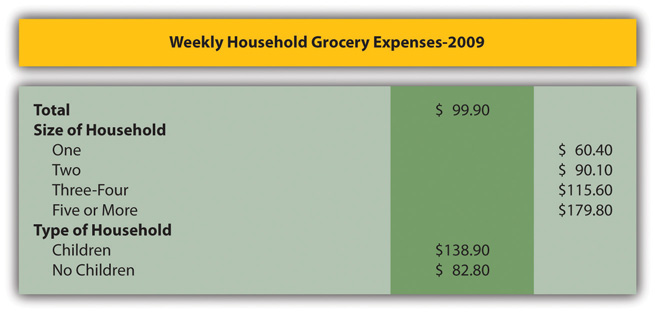Source: Food Marketing Institute, U.S. Grocery Shopper Trends, 2010; Food Marketing Institute, Key Industry Facts, 2010.
What Really Motivates Consumers: Green Earth or Green Cash?
Marketers take notice. One way to create a so-called win-win for consumers of sustainable products is to capitalize on what can help really motivate consumers to use green products—cost savings from using green products. Some consumers recognize this benefit as some green products save them money in the long run, such as driving a hybrid car saves at the gas pump; energy efficient light bulbs, refrigerators, washers, and dryers save on energy costs; water conservation shower heads save on the water bill; and using refillable water bottles is much cheaper than buying plastic water bottles at the store. Combining a concrete benefit like saving money with a sustainable benefit strengthens the brand messaging and may help to minimize the green pricing gap.
Place is where the product can be purchased and includes how the product is distributed to the purchase location. Place can be a physical store as well as a virtual store on the Internet, also known as an e-tailer. Amazon is probably one of the best and biggest examples of an e-tailer as it has no “brick and mortar” storefronts.
Some sustainability focused retailers with brick and mortar storefronts are moving toward more sustainable practices. Retailers like Kohl’s are implementing solar energy panels in some of their stores. Walmart is building more energy-efficient stores, using more alternative fuels in its trucks, and reducing packaging.Dan Sewell, “Retailers See Green in ‘Green’ Business,” MSNBC.com, April 23, 2010, http://www.msnbc.msn.com/id/36739333/ns/business-going_green/t/retailers-see-green-green-business.
A place-related sustainable marketing area of increased interest is buying locally. According to the 2011 Nielsen global online consumer survey, belief in the positive impact of local products is highest in North America, where 65 percent of consumers reported that local goods have a positive impact on the environment.
Consumers are increasingly concerned about the environment and carbon emissions from transporting goods over long distances. Increasing numbers of local retailers are promoting themselves as local with the associated environmental and community economic benefits associated with local residents buying from local businesses compared to national and international companies. Some larger companies are recognizing the interest in buying local by increasing their use of local suppliers. This includes Whole Foods stores buying from local farmers and fisheries.
Figure 6.8
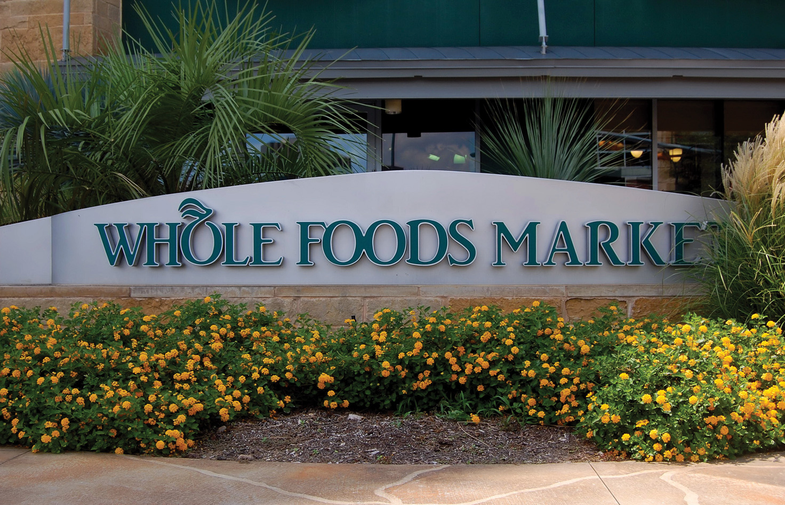Whole Foods: Buy Local Strategy
We are permanently committed to buying from local producers whose fruits and vegetables meet our high quality standards, particularly those who farm organically and are themselves dedicated to environmentally friendly, sustainable agriculture. We are greatly increasing our efforts in this regard by further empowering our individual store and regional buyers to seek out locally grown produce.
What is local? Local produce is by definition seasonal. In spring in California, that means artichokes; summer in Michigan means blueberries and autumn in Washington means apples. We value this natural diversity, and each of our 11 regions has its own firm guidelines for using the term “local” in our stores. While only products that have traveled less than a day (7 or fewer hours by car or truck) can even be considered for “local” designation, most stores have established even shorter maximum distances. Ask a team member for your store’s definition of “local.”
Source: Whole Foods Market, http://media.wholefoodsmarket.com/multimedia/image-library.
Retailers are increasingly scrutinizing their suppliers and demanding that the products that they sell meet higher sustainability standards. Walmart has implemented a sustainability scorecard that scrutinizes their suppliers’ and vendors’ entire product development cycle to ensure that they are implementing sustainable practices and continually looking to improve on these practices. If they are not, Walmart has stated that they will not carry the products. Other retailers are also beginning to demand that their suppliers meet sustainability hurdles including Safeway, Kroger, and Target.
The distribution channel is a significant consideration for sustainable marketing practices. Companies that are sustainability-minded are looking at ways to reduce their carbon footprint through a variety of efforts. Transportation with fuel-efficient loads, using alternative energy sources, and optimizing distribution routes are a few of the examples that can favorably impact the distribution channel in a sustainable way.
Promotion is the communication tools and tactics that a company uses to promote and market their product. There are many ways to communicate a company’s products and benefits. Branding is the cornerstone of the communications platform.
A brandAn image in the consumer’s mind for a particular product or service. It is defined by a perception, good or bad, which consumers or prospects associate with a particular product or service. is an image in the consumer’s mind for a particular product or service. Strong sustainable brands should have a brand image of the product or service having a positive impact on people and the environment. Stonyfield’s brand positioning of “healthy food, healthy people, healthy planet” stems directly from the company’s strategic vision.
Advertising, public relations, personal selling, consumer and trade promotion, social mediaMedia that is interactive, instantaneous, and mobile and allows consumers to interact with one another and share information anytime, anywhere., digital marketing, and mobile marketing are all marketing promotion tools. When determining which mediums to utilize, marketers need to consider (1) marketing objectives, (2) effective reach of mediums among identified target audiences, and (3) budget. It is best to use a mix of promotion vehicles to most effectively and efficiently reach the target market and consistently apply the branding and messaging to maximize awareness. The messaging is best when it elicits a call to action on the consumer’s part—that is, purchase, engagement, and loyalty.
Nike recently made a big splash with its marketing focused on creating a better world through sports. Their efforts included the first 100 percent recycled television advertising, reusing and remixing film from their previous campaigns over the years to create a new spot to introduce their Better World campaign. The digital mash-up showcases the inspiration and history of the brand while bringing attention to the sustainability concept of reuse and reducing resources. This is also a good example whereby utilizing sustainability principles actually benefits the bottom line. By reusing existing film, Nike did not have to spend the thousands of dollars to produce a new television commercial nor expend energy costs for a production shoot. For perspective, an average television commercial cost exceeds $300,000,Tim O’ Leary, “The Latest on How Much It Costs to Produce a TV Commercial,” Bizzy Life, May 23, 2010, http://bizzylife.com/2010/05/the-latest-on-how-much-it-costs-to-produce-a-television-commercial. and an average television shoot is two to three days depending on how many locations are required.
Utility company the Denver Water Company created an advertising campaign that visually highlighted their campaign message of “Use Only What You Need.” This campaign was run on outdoor billboards, print ads, and bus and taxi ads.
Figure 6.9
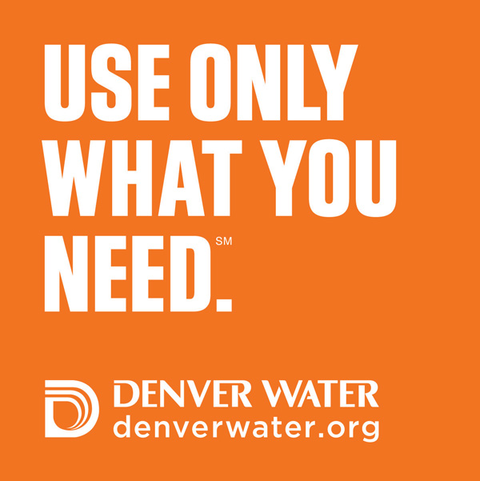Source: Denver Water.
Shipping Giant Befriends a Forest: FedEx Sustainable Solutions
(click to see video)FedEx recently launched a charming new ad campaign that highlights their sustainability initiatives. When consumers think of FedEx, sustainability doesn’t usually come first to mind, as it is a shipping and transportation business, which is a large user of fuel, not to mention paper products. But this new commercial highlights FedEx’s environmental efforts that help save forests and fuel and does so with Disney-esque charm. And when you strip away the Hollywood fairy tale dramatics, the spot reveals that FedEx is working hard at sustainable solutions for a better planet.
Makes you feel a little bit better when you absolutely have to have it delivered overnight.
There are many tools to use for public relations; among them are press releases, press conferences, fact sheets, letters to the editor, guest columns, radio and television talk show appearances, blogs, white paper publishing, speaker engagements, trade shows, and endorsements.
Toyota, when it launched Prius, one of the first hybrid cars, received endorsements from such influential eco-friendly organizations as the United Nations, the Sierra Club, and the National Wildlife Federation. These endorsements helped to establish Toyota’s green brand image and credibility. Utilizing press releases and print ads, Toyota helped to spread the word of their endorsements to maximize awareness. Prius has gone on to be the number one hybrid car in the United States.
Figure 6.10
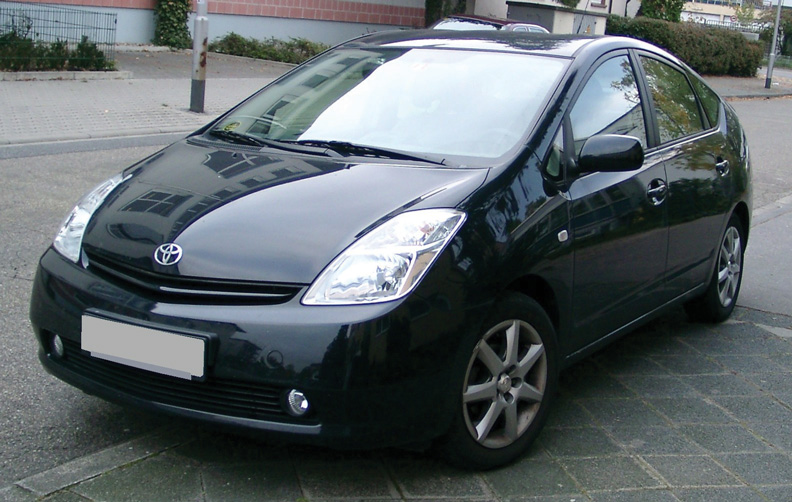Source: Wikimedia, http://commons.wikimedia.org/wiki/File:Toyota_Prius_front_20071025.jpg.
One of Simply Green’s (a biofuel company based in Portsmouth, New Hampshire; see Chapter 7 "Case: Sustainable Business Entrepreneurship: Simply Green Biofuels") most successful marketing tools was cold calling (phone calls that are unsolicited and without any prior connection) to music industry performers touring in the region. It was through this personal selling technique that Simply Green landed an account filling famous musicians’ tour buses, which earned Simply Green instant fame and credibility.
Free Standing Inserts (FSIs)
FSIs are used as a consumer promotion tool and are typically inserted into Sunday’s newspapers. FSIs are used primarily to distribute coupons to encourage purchase.
Groupon (group + coupon) is an online digital coupon company (http://www.groupon.com) that provides deal-a-day coupons and price incentives. These deals are activated when a certain number of consumers agree to purchase at a specified discount rate.
Blake Mycoskie started Toms Shoes on the premise that for every pair of shoes sold, one pair would be donated to a child in need. Toms Shoes recognized that consumers want to feel good about what they buy and thus directly tied the purchase with the donation. This consumer promotion is a buy one give one. In just four years, Toms Shoes has donated more than four hundred thousand shoes, evidence that consumers have clearly embraced the cause.
Using the power of social media, two CEOs created a “rap off” contest utilizing YouTube videos, Facebook, and Twitter. CE-YO Gary Hirshberg, of Stonyfield Yogurt (see Chapter 13 "Case: Strategic Mission–Driven Sustainable Business: Stonyfield Yogurt"), and CEO Seth Goldman, from Coca-Cola’s Honest Tea, became dueling rappers to promote organics for Earth month. Hirshberg and the “Stonyfield Moms” created a rap video about eating organic (http://www.youtube.com/watch?v=SCA6P9lsEfw&feature=pyv&ad=8718280378&kw=organic%). Not to be outdone, Goldman, who is a longtime friend of Hirshberg’s, thought that they at Honest Tea could do a better rap video and responded with the rap, “Rethink What You Drink” (https://www.youtube.com/watch?feature=player_embedded&v=jeF-65eDLc0#!).
Consumers voted on Facebook for the best rapper team and could upload their own organic rap video to win cash and a supply of Stonyfield Yogurt and Honest Tea. Both Stonyfield and Honest Tea used social media to engage consumers for a sustainable mission and actively encouraged consumer participation. The campaign went viral, receiving many website hits, likes on Facebook, tweets and retweets, and YouTube visits.
Tom’s of Maine, a Kennebunk, Maine–based personal care company owned by Colgate and well known for its sustainable positioning, uses social media to engage their consumers. For example, they introduced their new Wicked Fresh toothpaste and mouthwash with ads running on Facebook’s newsfeed page, a “Wicked Fresh” sweepstakes, a contest, and an online instant win game. The company also used Twitter to promote the contest.
Flash Mobs
Flash mobs are a group of people who assemble suddenly in a public place and perform a choreographed demonstration or performance that catches consumers unaware. Flash mobs are organized via telecommunications or social media.
Pop-up stores are portable store kiosks that are used to catch consumers in high-visibility locations and are only on display for a short period of time. They can be used at sporting events, concerts, or other high-traffic locations. For food and beverage pop-up stores, sampling is often a key marketing tactic used to entice purchase.
Volkswagen creates interactive exhibits in key cities globally to help consumers change their habits to reduce their carbon footprint. Titled “The Fun Theory” (http://thefuntheory.com), they have built interactive exhibits, such as glass bottle recycling bank arcades and piano-based steps in subways that play musical notes when stepped on to encourage more walking versus riding the escalator. By making consumer habit changes fun, Volkswagen is making an impact.
Seventh Generation (see Chapter 8 "Case: Marketing Sustainability: Seventh Generation Creating a Green Household Consumer Product"), a national manufacturer and distributor of environmentally friendly household and personal care products, recently has been successfully utilizing digital marketing techniques including SEO, retargeting (generating ads that follow consumers by placing cookies on their site based on previous site visits), and pay-per-click.
Figure 6.11
Source: Wikimedia, http://bit.ly/LivDAz.
Sea Bags, a Portland, Maine–based company that makes handmade tote bags from recycled sails, is using a strategic approach with QR codes, incorporating them into its marketing strategy. The QR code directs consumers to a mobile-enabled website that shows a video portraying the company story and commitment to recycling, detailing how they use recycled sails to make their product. Future plans are to include bag tags (also made of recycled sails) with QR codes, which tell consumers their sail’s history and sailing journey around the world.
Andrew Kellar, the founder of Simply Green, used grassroots marketing with a focus on company participation with a nonprofit organization (the New Hampshire Green Alliance) and high-visibility sales with well-known early adopterA person (or group) who embraces new technology or buys products or service before most other people do. customers (touring rock band buses) to build up its customer base to over five hundred in just one year at a very low marketing cost. (See more details in Chapter 7 "Case: Sustainable Business Entrepreneurship: Simply Green Biofuels".)
Honest Tea’s Honest Marketing
When Coca-Cola acquired Honest Tea, they began to approach the marketing plan the way the giant marketing behemoth always did—with plenty of national television advertising, deep trade promotion discounts, and slick shelf placement and promotion at retail. The traditional marketing efforts, which normally work well for a more traditional CPG brand, were a flop. Why? Because a big splashy marketing campaign was not in keeping with their “honest” brand image nor did it capitalize on the way that Honest Tea’s following had been built. Honest Tea’s success had been developed through grassroots marketing, which gave the brand an elite following that said, “We are not like everyone else—we require something special.”
Their Honest Cities campaign worked particularly well; Honest Tea set up displays with bottles of tea with a one-dollar collection barrel next to the pallets—purchases on the honor system. They promoted Earth Day by handing out reusable shopping bags with each purchase of Honest Tea. The brand built its presence first in a local market then spread out to the region and then moved to the next local market; the brand then positioned itself to grow into the next region. In addition, the brand continued to focus on the health food chain channel like Whole Foods—not a stronghold for the traditional Coke beverages.Denise Harrison, “Honest Tea Teaches Coke a Lesson,” Simplified Strategic Planning (blog), http://www.cssp.com/strategicplanning/blog/?p=871. So when the big marketing campaign failed, what did Coke do? Coca-Cola went back to basics to effectively develop and implement a marketing plan that personified the brand image and even reprised the Honest Cities campaign, refreshed, of course, using pop-up stores called “The Honest Stand” and social media.Kyana Gordon, “Honest Tea Campaign Stimulates Sales Growth, Brand Awareness, and Honesty,” PSFK, March 9, 2011, http://www.psfk.com/2011/03/honest-tea-campaign-stimulates-sales-growth-brand-awareness-and-honesty.html.
Source: Flickr, http://www.flickr.com/photos/agirlwithtea/5092219149/.
With all the attention given to sustainability, the question remains, why aren’t more consumers using green products? There are three key barriers that sustainability marketers need to keep in mind to better position their products for growth:
Mainstream America Unmoved by Green Marketing“Mainstream America Unmoved by Green Marketing,” SustainableBusiness.com, http://www.sustainablebusiness.com/index.cfm/go/news.display/id/22277.
Green marketing messages targeting mainstream American consumers are missing the mark, according to a study released in 2011 by consultant group OgilvyEarth. The report included research that showed that many of the environmental messages of marketers were not just failing to close what the study called the Green Gap, but were actually cementing it by making green behavior too difficult and costly from a practical, financial, and social standpoint.
“Many of the world’s leading corporations are staking their futures on the bet that sustainability will become a major driver of mainstream consumer purchase behavior. Unless they can figure out how to close the gap, there will never be a business case for green,” added Freya Williams, Co-Founder and Director of Strategy at OgilvyEarth and co-author of the study.
The study found that 82% of Americans have good green intentions but only 16% are dedicated to fulfilling these intentions, putting 66% firmly in what the report called the “middle green.” Considering green behavior on a continuum, most of the dialogue and marketing to date according to the report has focused on “super greens” on the one hand and “green rejecters” on the other. There has been limited success in motivating the masses or the middle green.
Existing green marketing is either irrelevant or even alienating to most Americans, the study asserts. Half of Americans think green and environmentally friendly products are marketed to “Crunchy Granola Hippies” or “Rich Elitist Snobs” rather than “Everyday Americans.”
The report highlighted that cost continues to be the greatest barrier that holds Americans back from more sustainable purchases.
“One trip to the grocery store and you would see that green products can have as much as a 100% price premium. It’s as if we’re penalizing virtuous behaviors with a de facto sustainability tax,” says Bennett.
But price was far from the only thing preventing consumer behavior change. The super green minority, according to the report, who venture into the green space do so with a relatively high social and emotional cost. They say they feel ostracized from their neighbors, families, and friends. Meanwhile the middle greens say they fear attracting the negative judgment of their peers if they go out on a limb to purchase green products. Until green products and services feel normal and adhere to normative pricing, the middle green are unlikely to embrace them.
Nearly half of Americans claim to feel guiltier “the more they know” about how to live a sustainable lifestyle. Super greens feel twice the guilt as the average American. Even among the green middle, guilt plays a role. As it increases, these consumers want to retreat to the comfort of ignorance.
“Understanding the prevalent misuse of appeals to a sense of guilt, we can see where sustainability marketing has gone wrong,” says Williams. “People don’t need to know about the state of polar bears in the Arctic to turn off the lights—paradoxically it may be stopping them from doing so.”
The barrier to adopting sustainable behaviors is even higher for men. Fully 82% of respondents say going green is “more feminine than masculine.” More men identify as Green Rejecters, and the ranks of the Super Greens are dominated by women. This feminization holds men back from visible green behavior like using reusable grocery bags or carrying around reusable water bottles.
Price is a well-recognized hurdle for many consumers in purchasing sustainable products and services. Sixty-six percent of US consumers view environmentally friendly products as too expensive. Whether consumers are looking to purchase an energy saving light bulb or environmentally friendly home cleaning products, these products often cost more than the most popular consumer versions. Often the premium price puts these products out of the reach or interest of the majority of consumers. And the price premium as a hurdle is magnified during economic downturns.
Gap between Concern and the Cash Register
Overall, 83 percent of global online consumers reported in Nielsen’s 2011 Global Online Environment and Sustainability Survey (http://www.nielsen.com/us/en/insights/press-room/2011/global-warming-cools-off-as-top-concern.html) say that it is important that companies implement programs to improve the environment, but only 22 percent say they will pay more for an eco-friendly product. Willingness to pay extra for environmentally friendly goods is highest in the Middle East and Africa, where one-third of consumers are willing, and lowest in North America, where only 12 percent of both Canadians and Americans say they will pay extra for eco-friendly products. Many consumers reported a personal preference for eco-friendly goods, but large percentages of respondents report setting aside this preference and buying whichever product is cheapest, including 48 percent in North America, 36 percent in the Middle East and Africa, 35 percent in Europe, 33 percent in Asia Pacific, and 27 percent in Latin America.
The price premium compared to the conventional alternative needs to be addressed through the three other parts of the marketing mix (product, place, and promotion). But the most effective way to address the price premium is to address it directly—to find ways to reduce it. Reducing the sustainable price premium is a key factor in having a greater percentage of average consumers purchase more environmentally favorable products.
Figure 6.12
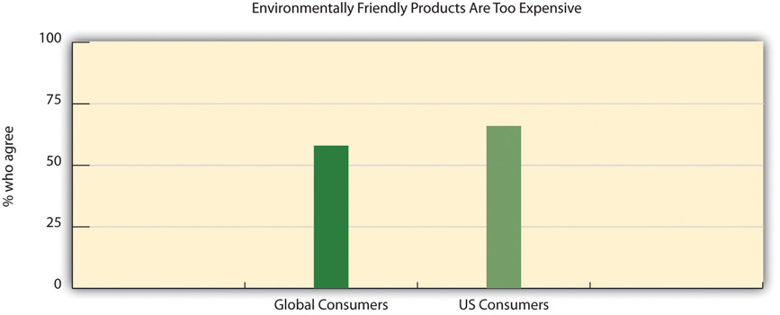Source: Gfk Roper Green Gauge Report, September 22, 2010, http://www.eMarketerGreen.com.
Marketers need to clearly communicate the product’s benefits and sustainable position especially when commanding a premium price. The challenge is that greener products do not have a stellar history of performing well. In the 1970s, green laundry detergents were developed as a result of concerns over phosphates—a chemical that can cause environmental degradation in large quantities—and resulted in gray, dingy clothes. The original organic cereals tasted like cardboard to many consumers and the early versions of energy efficient light bulbs cast a green glow. Many consumers—roughly a third in the United States and around the globe—still question the efficacy of green products versus their regular, nongreen product alternatives despite strides made in product performance.
Going Green Packaging? Go Softly.
In April 2009, Frito Lay introduced a biodegradable bag for Sun Chips with a big marketing effort to play up its environmentally friendly nature as it was made from plants and not plastic and could break down in compost. Sound good?
Well, the stiffer material made the packaging give off a loud annoying noise that measured at roughly eighty to eighty-five decibels. Consumers compared this sound to a noisy busy city street or even a jet engine. The criticism grew so much that within six months, the company was forced to switch back to its original bag. It didn’t help that sales dropped 11 percent during that timeframe as well.“SunChips Bag Proves It Not Easy Being ‘Green,’” Washington Post, October 7, 2010, http://www.washingtonpost.com/wp-dyn/content/article/2010/10/06/AR2010100606681.html.
Marketers need to stress the traditional benefits of the sustainable good and must demonstrate the product’s effectiveness. This can be more important than highlighting the sustainability benefits to overcome inherent consumer skepticism.
Figure 6.13
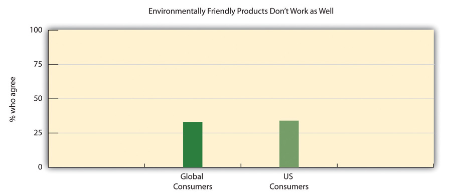Source: Gfk Roper Green Gauge Report, September 22, 2010, http://www.eMarketerGreen.com.
A good example of this is Glad Products Company’s 2011 introduction of a version of its Glad tall kitchen drawstring trash bag that is made with less plastic. Glad Products, a joint venture of the Clorox Company and Procter & Gamble, spent over $30 million on a campaign to introduce the trash bags. The bags were billed in ads and on packages as “strength with less plastic” and “stronger with less plastic waste.” (The bags were made using 6.5 percent less plastic than before, Glad Products executives say, and have what are called reinforcing bands to make the bags stronger.)Stuart Elliot, “Glad Cuts the Hyperbole for Its New Green Trash Bag,” New York Times, October 19, 2011. The company smartly kept the price at parity to more conventional counterparts, thereby eliminating the green pricing gap. They have made it easier for consumers to adopt this more sustainable product. Moreover, they have positioned it correctly by combining an efficacy product benefit, “stronger,” with a sustainable benefit, “with less plastic/less plastic waste.” That’s a win-win-win.
Many sustainable practices require consumers to change their habits and adopt new ones. Recycling, turning off the lights, lowering the thermostat in winter, using recyclable bags for shopping—all require changing behavior. Typically changing a behavior is a slow process as consumers have to be retaught a habit. That is why Generation YRefers broadly to the demographic cohort born between 1978 and 1995. The group is viewed as tech savvy and reliant on new media and digital technology. Generation Y and millennials are the children of the post–World War II baby boomer generation., often referred to as millennialsAn abbreviation for millennial generation, it is a term used by demographers to describe a segment of the population born between 1980 and 2000, a slightly narrower and younger subsegment of the Generation Y demographic group., are quicker to adopt sustainability practices since they are not breaking old habits.
Most behavioral changes are more readily adopted when there is a perceived consumer benefit, for example, using a kitchen bag with less plastic that is stronger and driving a fuel-efficient car that saves money at the gas pump. Using a more energy efficient, longer-lasting light bulb and a programmable thermostat can save on energy costs and conserving water using a more efficient toilet saves on the water bill. Marketers can help consumers more quickly adopt new behavior and buy new products when they highlight the benefits and long-term cost savings in promoting the product.
One Step at a Time
How much are marketers of green products scaling back ambitious efforts to sell eco-friendlier brands as life-changers and planet-savers?
A line of recycled paper products, introduced by Marcal in 2009, has the brand name “Small Steps” rather than something grander like “Giant Leaps.” Each Marcal product is promoted on packages with the tagline, “A small, easy step to a greener earth.” This provides a much more realistic and manageable tack that diverges from the hyperbole so favored by Madison Avenue and helps consumers feel empowered to make a difference.
Although sustainability continues to grow as an important business concept, focusing on sustainability in marketing entails significant risks that need to be addressed. These risks can cause problems with a company’s marketing plan, short and long term.
The sustainable marketing risks can be categorized as follows:
Addressing market risks are part of a normal strategy and marketing plan development process, but sustainability adds a dimension of uncertainty due to its relative “newness.” Marketing sustainability is in its high-risk phase since the consumer appeal for sustainability is still not well defined. It is true that consumers, when polled, will espouse sustainability’s benefits and appeal, but a gap currently exists between the consumers’ words and actions.
As a result, the following market risks are associated with sustainability initiatives:
In the abstract, consumers easily agree that the coupling of economic and environmental sustainability is a very positive concept. Who would argue that working to ensure that future generations have the resources to enjoy success is a negative idea? This apparent universal appeal has led more than a few marketers to believe that sustainability as a consumer benefit has mass potential. Consumer purchasing behavior to date, however, has not confirmed sustainability’s appeal for the majority of potential consumers. When marketers pit sustainability’s strength as a benefit against value in a low-price or low-cost provider differentiation strategy, sustainability seems to have only a limited impact. When marketers pit sustainability’s strength as a benefit against convenience and effectiveness in a differentiation strategy, sustainability also seems to have very limited impact. Sustainability marketers need to understand their “pioneer” role in capturing and leveraging sustainability benefits. Consumers still seem to be processing the value of sustainability as a benefit. Most importantly, consumers are still processing how much they would pay for this benefit.
In addition, sustainability often addresses externalities or failures of conventional products or services to fully cost the negative impact they have. Therefore the “price” of sustainability, whether it be an additional financial cost or a time or effort cost, is something that may make society collectively better off, while making an individual worst off for absorbing that additional cost. The marketer must find ways to communicate personal benefit as well as societal benefits. “It’s good for the environment” may not be good enough to convince a consumer to justify any personal cost or sacrifice.
Initial attempts to use sustainability as a key marketing benefit have demonstrated the nascent appeal. Niche businesses, such as Simply Green and Seventh Generation, as well as larger-scale companies such as Stonyfield seem to be able to define an industry segment using the sustainability platform. When mass marketers, attracted by the high growth rates in the “good-for-you, good-for-the-planet” segment, attempt to duplicate niche marketers’ success on a larger scale, the mass marketers have generated mixed results.
Examples include “green” product launches from Clorox, SC Johnson, and Dwight and Church. Although some products, supported by heavy introductory marketing programs, experienced initial success, the premium pricing for the products with no accompanying added benefit except for sustainability eventually led to a reduction in the size of the business. This was the case with Green Works from Clorox. Sales of Green Works reached $100 million in its introductory year. Clorox spent approximately $25 million in advertising in 2008 and 2009. Due primarily to the recession, which put pressure on premium-priced products, Green Works sales fell to $60 million and Clorox dropped advertising support to approximately $1 million.
Sustainability as a key benefit is still developing, and the strength of the benefit versus established benefits of better value, lower price, more convenience, and more effectiveness is still not measurable or clear. Many consumers will purchase green products that make no compromises in other benefits. But most consumers will not buy when the green benefit comes at the expense of higher price or more conventional benefits.
The marketing discussion has focused on sustainability as a benefit in a product offered to consumers. When companies apply a sustainability focus as a corporate mandate, such as Timberland, the benefit to the business is also still to be determined. The number of consumers willing to buy a product from a “green” company or an outstanding corporate citizen instead of products from other companies with no such mandate is not definitive at this time. Marketers may believe that the “good” company will reap benefits over the “neutral” or “bad” companies, but unfortunately, this may not always be the case.
Nevertheless, current evidence suggests that consumers are finding the sustainability benefit to be appealing and will possibly become more influential for a consumer’s buying decision in the future. Sustainability as a benefit appeals to the logical and emotional sides of the consumer, offering potential for the development of a larger opportunity. Marketers must remember that they are still responsible for developing this opportunity by pioneering information dissemination to consumers and education about sustainability. Sustainability does not yet operate in a clearly defined opportunity space that allows companies to launch new products with no pioneering effort for mass success.
Chasing the opportunity presented by the growing awareness of sustainability also can create operating risks that need to be addressed during marketing plan development and execution. Much discussion on this subject has taken place, and the issues are fairly straightforward. The following operating risks are associated with pursuing sustainability initiatives as part of a marketing plan:
Just as sustainability would seem to be a rallying cry for consumers, some companies have jumped on sustainability as a rallying cry for employees. By incorporating sustainability into corporate mission statements and adding green to their products, some companies like Timberland believe that they can drive business improvement via a competitive advantage. All this seems to be a reasonable operating assumption, and a growing number of companies including Timberland have been successful operating under this assumption. Loss of profitability can occur, however, if a company uses more financial and human resources than competitors without gaining a commensurate benefit. As an example, activities designed to protect the environment have costs. If a company cannot price to recover these costs or if the costs do not lead to benefits that make products superior in the minds of the consumer, then the company now operates at a cost disadvantage versus competition. By internalizing these costs and not receiving a real benefit, a company may experience loss of sales, market share, and profitability.
In addition, adding sustainability to the marketing mix can lead to a loss of focus on the primary objective: economic profitability and economic sustainability. Driving activity through marketing to results that are not part of the core economic strategy may lead a company to damage its profitability by loss of focus and misallocation of critical resources.
The last risk classification deals with the risks to corporate image that can occur when pursuing sustainability marketing activities and goals. Although all marketing activities have implications for corporate image, sustainability marketing activities can create a higher level of positive or negative impact on image. This is probably because sustainability is a more altruistic and noble cause versus other business objectives and also increasingly of interest to the media and general public and therefore a highly visible company activity.
The following corporate image risks are associated with sustainability marketing:
GreenwashingThe practice of making an unsubstantiated or misleading claim about the environmental benefits of a product, service, or technology. is the use of green marketing to give the incorrect impression that the company’s strategy, operations, and products are designed to be beneficial to the environment. The company attempts to market their green credentials to improve their public image to generate greater sales through positive “spin.” Companies embarking on this path are taking a significant risk because exposure of the company’s true activities and footprint could result in a relatively large negative impact on all elements of the marketing and public relations plan and eventually sales and profitability. Even companies that are sincere but are perceived to be insincere by the public can suffer grave consequences. It is imperative for companies employing sustainability marketing to be genuine in their motivation and effective in its execution. The damage done by even a hint of insincerity or with poor execution is potentially irreversible.
Greenwashing
Environmentalist Jay Westerveld coined the phrase in his 1986 essay regarding the hotel industry’s practice of using placards in each room to promote reuse of towels to “save the environment.” He wrote that many hotels made little effort toward energy use reduction. The principal goal of this activity was to increase profits.
Since that time, the Federal Trade Commission (FTC) has put some parameters into effect to help minimize greenwashing with its Green Guide, which was first published in 1998 and revised again in October 2010. The FTC Green Guide mandates that companies provide clear substantiation to any environmental claims and that there is specificity surrounding these claims. In particular, the FTC warns of using more generic terms such as “eco-friendly” and “environmentally friendly” without documented and detailed evidence to these claims. Failure to comply can cost a company up to $16,000 per false claim.Lee van der Voo, “FTC Takes a Swipe at Greenwashing,” Sustainable Business Oregon, May 8, 2011, http://www.sustainablebusinessoregon.com/articles/2010/10/new_ftc_rules_take_swipe_at_greenwashing.html.
To see the "Sins of Greenwashing," visit http://sinsofgreenwashing.org/findings/the-seven-sins/.
Even a company that has demonstrated its commitment to sustainability over time is still vulnerable, if not more vulnerable, to a misstep in its sustainability initiatives and action. Some companies may be able to generate goodwill through their past actions, but some consumers may take a “what have you done for me lately?” mind-set that does not provide the opportunity to generate this equity. As a result, marketers who incorporate sustainability marketing as an integral element of their plan must be aware of the importance in maintaining consistency and effective execution in its approach and commitment.
As an example, Green Mountain Coffee, a company that has sustainability among its core beliefs, has had some setbacks to its public image due to its biggest business success, Keurig coffee cups. Per its mantra, the company is aggressively researching methods to build a recyclable cup, but its current cups are not biodegradable. Green Mountain’s history has given it some protection from negative publicity, but this protection may wear down if a solution is not found in the short term. Once the company loses that essential part of their corporate image, Green Mountain runs the danger of becoming just another coffee company. (Green Mountain Coffee is discussed in greater detail in Chapter 9 "Case: Brewing a Better World: Sustainable Supply Chain Management at Green Mountain Coffee Roasters, Inc.".)
Although there is some significant disagreement and experience to support that disagreement, there is evidence that marketing that leverages sustainability attributes is relevant and important. Due to the unique and continuously changing positioning of sustainability in consumers’ minds, sustainability marketing comes with its own set of rewards and challenges. To be successful in sustainability marketing, a company must recognize and be ready to deal with the risks associated with this relatively new business concept.
Marketing to the “green” or sustainability market is different than marketing mainstream products. The products are held to higher standards, judged not only on the product’s effectiveness but also on delivering on societal and environmental responsibilities. When marketing sustainability it is important that dedication be given—from the initial stages of developing the product through to the products end of life—to environmental responsibilities while still delivering financial performance.
The following are guidelines on how to market sustainable products effectively: